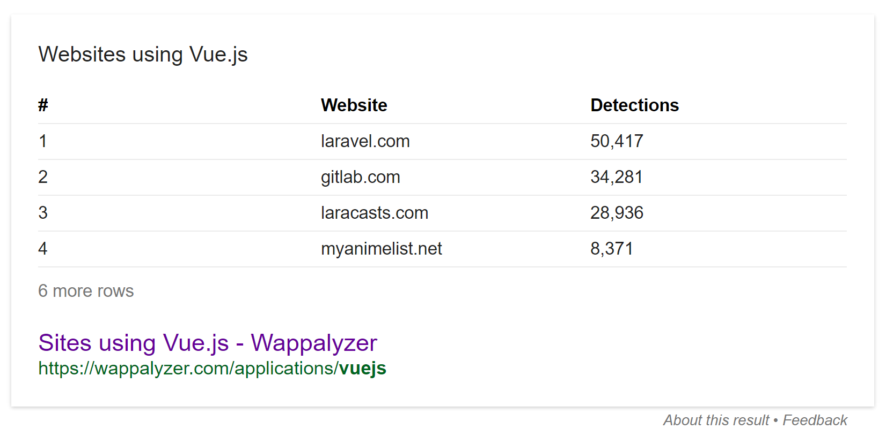
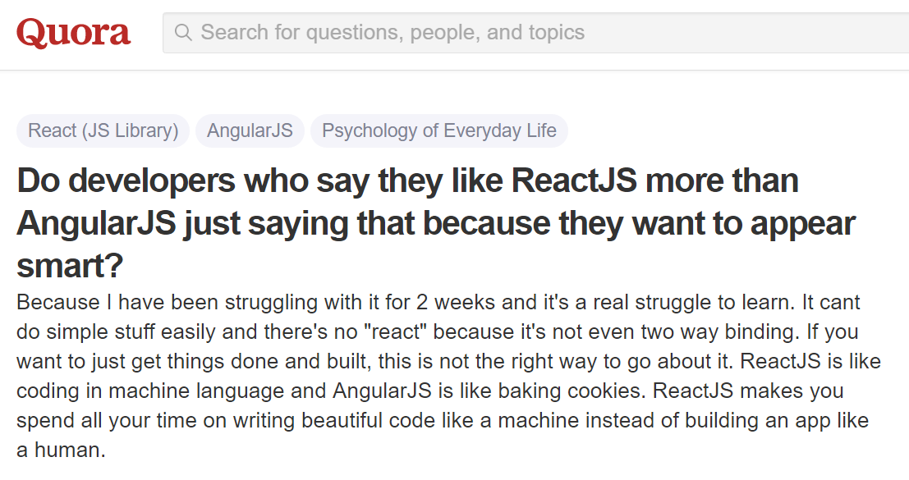

6 things to cover
- what it is
- what it isn't
- why people love it
- why people hate it
- why people fuck it up so bad
- how to not fuck it up
#1
what it is
a hot shit javascript thing that renders interfaces
👉 ...and only renders interfaces 👈
components
data flows down
app state floats above your components.
pass only what's needed to children.

events bubble up
emit changes to the app state.
trigger a re-render when data changes.

only re-render changes
...but write code like it's rendered once
one-way data flow
deterministic
- state is disconnected from i/o
- same input gives same output
- debugging is 👌
portable
- components only need props
- not subject to rigid hierarchies
- refactoring is 👌
#2
what it isn't
react is not:
- a programming language
- an application framework
- an all-in-one solution
- the answer to all your problems
- a new idea
#3
why people love it
high performance
react outperforms in common DOM ops
(highest-performing UI lib, competes with DOM-only libs on performance)


https://auth0.com/blog/more-benchmarks-virtual-dom-vs-angular-12-vs-mithril-js-vs-the-rest/
easy to test
(easier than anything else, at least)
- declarative components only need props
- no need for mocks or special test logic
- easily run tests without build-up/tear-down
also good
easy to test == easy to understand
functional concepts
- immutable data
- composable functions
- declarative logic
also good
simplifies onboarding, documentation, and maintenance
scaleable
for real, seriously
- no assumptions or requirements
- 100% flexible, but with prescribed best-practices
- as much or as little as you want
- client-side, server-side, or both
case in point
facebook's initial react app was just the chat box,
now it's the whole site
component lifecycles
make stateful data painless
hooks for everything
- component creation / destruction
- prop changes
- should update / will update / did update
stop the jank
no race conditions, "cross-component" communication,
or scope.$apply() bullshit
some big fuckin names
significantly or entirely made with react
the competition is stiff
#4
why people hate it
it's different
nothing new, but unfamiliar
- unidirectional data, not two-way binding
- components, not templates
- micro, not monolithic
- functional, not object-oriented
- javascript, not markup
there's less of it
out of the box, you only get component rendering
(sufficient for 90% of projects, imo)
popular features missing from core
- routing
- history
- HTTP
- data models
- animation
html in your js
- it's not HTML
- familiar way to write nested list structures
- way easier for designers
- completely optional - you can write plain js
confusing to some

a fundamental understanding of software design is required,
but react is also a great way to get that understanding.
#5
why people fuck it up so bad
misunderstanding
react is just for rendering UIs
you don't need to build entire websites with it.
it's fun, but it's overkill almost every time.
old habits die hard
people often bring baggage from other frameworks or languages
- tangled webs of two-way data binding
- DOM manipulation outside of app flow
- imperative application structure (vs. declarative)
- "all-or-nothing" mentality
plain old inexperience
"front-end" dev is really easy to get into, which is great!
however, the industry is hyper-saturated with
beginners, and react is the The New Shit™
overengineering
99.999~% of projects will never need more than the basics
there are tons of addons, and programmers
are especially vulnerable to technology fetishism.
just too fucking much
boilerplates, starter kits, build systems, task runners
no, this is not a joke. this dude is serious.
#6
how to not fuck it up
interfaces should react to data
declarative program flow is the best bug zapper.
you will eliminate race conditions this way, no joke.
one state
your app should have one single, immutable source of truth.
keep components small
follow the unix philosophy
"do one thing and do it well"
build like a video game
or desktop program
imagine a main() function that gets
called every frame or cycle.
take only what you need
here's a fully working react setup
<html>
<body>
<div id="example"></div>
<script src="react.min.js"></script>
<script src="react-dom.min.js"></script>
<script src="babel-core.min.js"></script>
<script type="text/babel">
var root = document.getElementById('example');
ReactDOM.render(<h1>Hello, world!</h1>, root);
</script>
</body>
</html>
(you could build a whole app like this...and this is the deluxe implementation)
in conclusion,
don't fuck it up
thinking in react
by pete hunt
https://facebook.github.io/react/docs/thinking-in-react.html